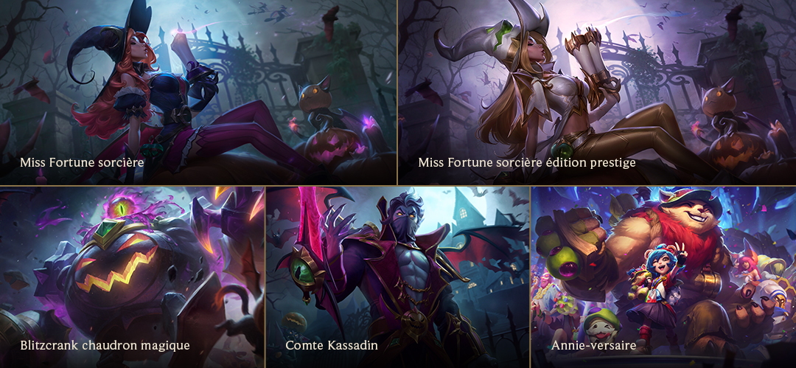
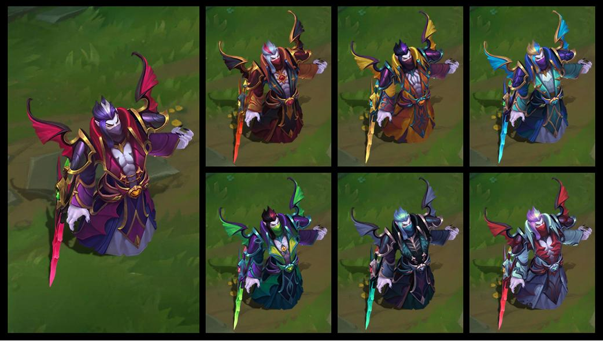
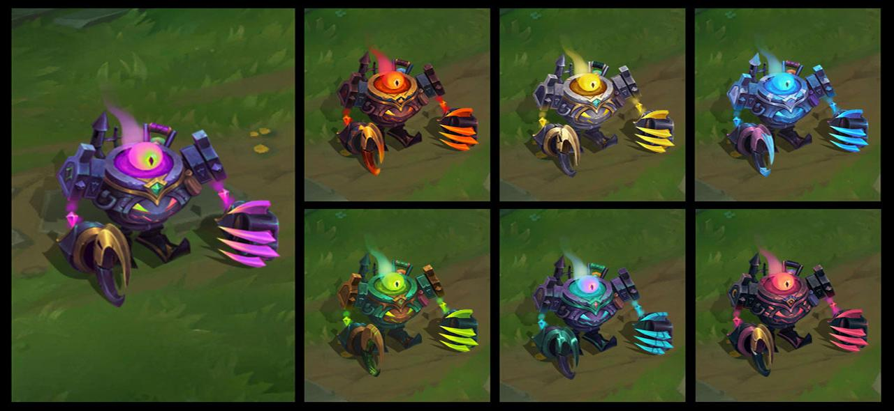

- Quand Kindred lance son Z – Frénésie de Loup, Loup attaque désormais correctement les ennemis à portée si Agneau n'est pas en train d'attaquer.
- Quand un champion marche sur le sanctuaire de vitesse du carapateur, un marqueur de révélation en forme d'œil apparaît désormais au-dessus de lui.
- L'effet visuel du R – Tour de force suprême de Qiyana ne se désynchronise plus de son effet en jeu, et les ennemis le voient suivre correctement la forme du
terrain jusqu'au bout s'il a été lancé dans le brouillard de guerre. Suivre correctement la forme du terrain jusqu'au bout s'il a été lancé dans le brouillard de guerre.
- La bulle d'aide du R – AMÉLIORATION ! d'Heimerdinger n'indique plus que le ralentissement de son E – Grenade éclair CH-3X est augmenté à 80%.
- Seuls les champions peuvent ramasser l'Œil du héraut. Le traverser avec le R – Dernier soupir de Yasuo ou marcher dessus avec l'ombre du Z.
– Entaille sombre de Kayn Assassin de l'ombre ne permettra plus à ces entités (qui ne sont techniquement pas des champions) de les ramasser.
- Quand Sylas détourne la compétence ultime de Nidalee et utilise son A – Mise à terre, il inflige désormais les dégâts correctement.
- L'effet visuel du R - Cri de lumière d'Aurelion Sol n'est plus visible de manière globale à travers le brouillard de guerre.
- Neeko peut à nouveau se sélectionner pour désactiver son déguisement, ce qui lance un délai de récupération de 2 secondes.
- Kled n'est désormais plus impossible à cibler quand il tombe de Skaarl à proximité des tourelles et murs.



- Miss Fortune sorcière, Comte Kassadin et Blitzcrank chaudron magique seront disponibles le 24 octobre 2019.